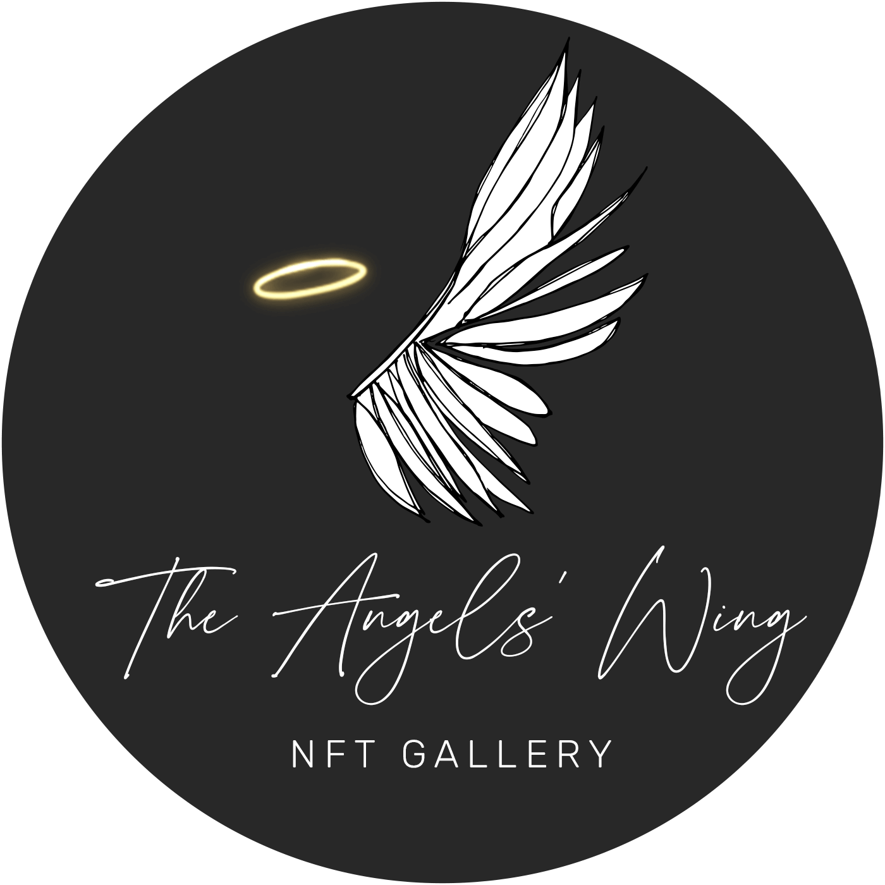

The Angels' Wing
NFT Art Podcast · 66 episodes · March 2022 – September 2023
We were a community of independent NFT collectors and artists. Every Sunday we held a public space and talked with emerging artists about their artwork, web3, NFT pricing strategies, marketplaces, and much more. We also showcased their work in a virtual 3D gallery.
The show has ended. This archive is here to stay. The feed keeps working, there just won't be anything new.
Hosted by the OG team: Casper, Ethspresso, Yune, Johannes, and Rabble.